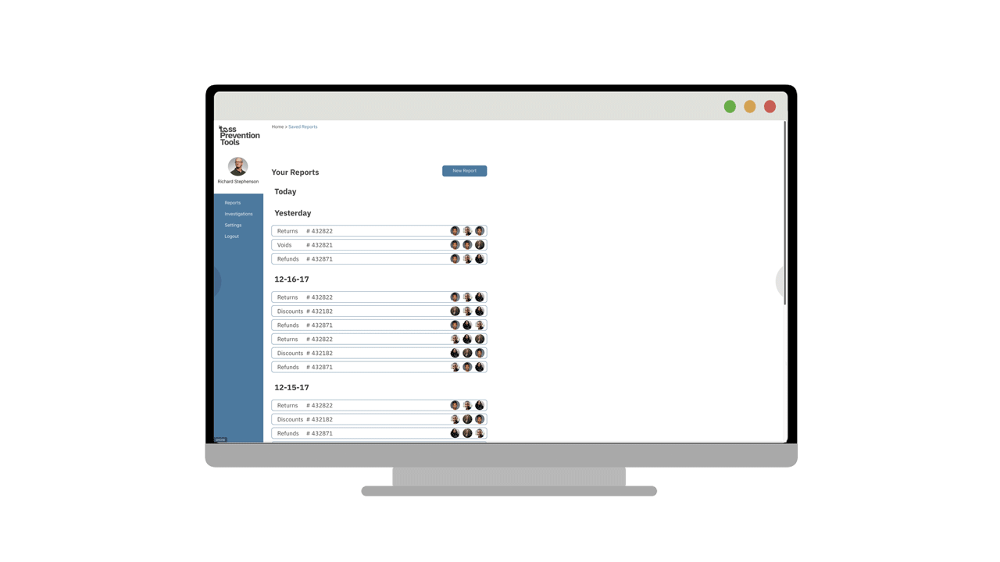

<div class="single-project-section section loss-prevention">
    <div class="container">
        <div class="row single-project-row">
            <div class="col-lg-9 col-md-8 content">
                <div class="project-single-first-box">
                    <div class="project-single-title">
                        <h1>Loss Prevention Tools Web App</h1>
                    </div>
                </div>
                <div class="project-single-desc">
                        <p>This was done as a <em class="cbold">design concept</em> for a client.</p>
                        <br>
                        <p>Design of Loss Prevention Tools, with emphasis on an MVP focusing on user ​research
                           wireframes, clickable prototype, user stories, and flows to ​validate ​client's approach
                           for ​a ​new ​loss prevention ​web ​app.</p>
                </div>
                <div class="margin-box margin-p">
                    <h2>Overview</h2>
                    <div class="outer-box"></div>
                    <h3>About</h3>
                        <p>Loss prevention professionals who work specifically in small to medium size retail companies are finding
                           it hard to effectively upload &amp; analyze data for specific internal theft categories with a tool that
                           is price-effective &amp; tailored to their specific needs.</p>
                           <br>
                        <p>For this concept piece, I worked on a team of three and served as the <em class="cbold">Information
                           Architect</em>, <em class="cbold">Visual Designer</em>, and <em class="cbold">Project Manager</em>.</p>
                    
                    <h3>Duration</h3>
                        <p>This project was completed over a <em class="cbold">2.5 week</em> design sprint.</p>
            
                    <h3>Process</h3>
                        <ul> 
                            <li>Project Management</li>
                            <li>Business Analysis (develop understanding of client through kick off meeting and in depth 
                                interview)</li>       
                            <li>User Research (Interviews, Proto persona, &amp; Task Scenario Development</li>
                            <li>Information Architecture</li>
                            <li>Interaction Design &amp; User Testing</li>
                            <li>Visual Design</li>
                            <li>Final Prototype</li>
                        </ul> 
                    <h3>Final Design</h3>
                    <div class="imgbox">    
                            {% include img.html
                                image="media/projects/loss.prevention.b-a"
                                caption="Loss Prevention Tools app wireframe and final mockup" %}
                    </div>
                    <h3>The Challenge</h3> 
                        <p>Loss Prevention Tools is working to build a digital tool geared toward retail loss prevention to 
                           assist loss prevention experts with analyzing data and case management.</p>
                           <br>
                        <p>The goals of the web app design:</p>
                        <ul>    
                                <li>Create a more intuitive data analysis web app for analyzing internal theft within retailers.</li>
                                <li>Validate ideas and user base.</li> 
                                <li>Offer a less complicated and less expensive tool that is more straightforward and doesn’t 
                                    require intensive training.</li>
                                <li>Offers key components of other loss prevention tools.</li>        
                            </ul> 
                    <h3>The Solution</h3>
                        <p>We will create a platform that loss prevention experts can utilize to upload data, filter the proper 
                           categories, analyze the results, and conduct investigations in a time-efficient manner.</p>    
                </div>
               
               <div class="margin-box margin-p">
                    <h2>Discovery</h2>
                    <div class="outer-box"></div>
                    <h3>Project Management</h3>
                    <p>To manage the team in terms of task assignments and project plan creations, I made a spreadsheet
                       as suggested by fellow team members. It guided me in conducting daily check-ins to make sure 
                       every task decision related to the project was on track. A team meeting was also conducted prior
                       to releasing everyone to do their assigned tasks. The purpose of this was to review the list of 
                       tasks, deadlines, client, and team goals.Lastly, doing all of these provided that big picture 
                       road map for where I am taking the team and how we are going to get the end goal. 
                    </p>
                    <div class="imgbox">    
                            {% include img.html large=true one=true
                                image="media/projects/loss.prevention.projectplan"
                                caption="Project Planning" %}
                    </div>            
                    <h3>Client Interview</h3>
                        <p>The team and I compiled a list of questions about the company, business goals, and asked the client during kick
                           off meeting. The responses gave us great insight about the client and his specific goals for this 
                           project.
                    <h3>Research Problem Statement</h3>
                        <p>"I will identify how loss prevention experts currently analyze retailer data to pinpoint internal theft by 
                            conducting telephone and in-person interviews &amp; compiling the results."<p>
                                
                        <p>Lauren came up with the Research Problem Statement before the team collectively decided on a Problem Statement
                           because of the fact that the company does not currently have a product. The research would be significant in
                           informing us the right target users and designing the MVP. 
                        </p>
                    <h3>Competitive Analysis</h3>
                        <p>Lauren, being the lead researcher did a competitive research to gain more insights about loss prevention tools
                           that the industry professionals use. Results showed that most tools in the market are expensive and offer
                           features that are more advanced.
                        </p>           
                    <h3>What do users think about their current loss prevention digital tool? What would make their job easier?</h3>
                        <p>The first 5 days of the project was spent with research.Even though  Lauren was the head researcher, 
                            it made sense to help her in looking for the right target audience and conduct interviews. First, I 
                            went out with the team for initial interview with store managers around nearby businesses during 
                            daytime. Secondly, I went to 4 stores still in downtown (All Saints Clothing, Carhartt, Ross, Barnes 
                            and Noble) asking the Loss Prevention managers with 17 formal questions and recruited them for testing 
                            later. So far, I managed to interview 2 successfully. None said yes for the testing.
                        </p>
                    <h3>Main themes from the initial interviews as summarized by Lauren:</h3>  
                        <ul>
                            <li>Problem: Manually sifting through the data to find the outliers, which takes 8-20 hours.</li>
                            <li>The way that managers and directors go about their investigations really depends on what type of theft
                                occurs (examples include: refunds, returns, before/after hours transactions, voids, discounts, paperwork 
                                errors, training errors).</li>
                            <li>Frequency of data varies from store to store, ranging from daily to weekly.</li>
                            <li>Data uploading varies, ranging from copying and pasting, IT uploading, and a real-time updated P.O.S.</li>
                        </ul>   
                    <h3>Surprising Findings &amp; Insights:</h3>
                        <ul>
                            <li>4/4 users were unhappy with their current platform.</li>
                            <li>Not one platform used or one consistent standardized procedure.</li>
                        </ul>                   
               </div> 

                <div class="margin-box margin-p">
                    <h2>Approach</h2>
                    <div class="outer-box"></div>
                    <h3>Who is our Primary User? Secondary User?</h3>
                        <p>Lauren developed 2 proto personas based on the initial user research. Richard, being the Director of Loss 
                           Prevention, was our primary user and Danielle, the Loss Prevention Associate, was the secondary target user.</p><br>
                        <p>Loss Prevention Tools should provide the following to greatly accommodate our proto personas:</p>
                            <ul>
                                <li>Produce organized reports.</li>
                                <li>An inexpensive tool.</li>
                                <li>A streamlined process for uploading data and identifying outliers.</li>
                                <li>A clean dashboard to conduct organized in-depth investigations.</li>
                            </ul>    
                            <div class="imgbox">    
                                    {% include img.html
                                        image="media/projects/loss.prevention.persona1"
                                        caption="Primary persona" %}
        
                                    {% include img.html
                                        image="media/projects/loss.prevention.persona2"
                                        caption="Secondary persona" %}
                                </div>     
                         <br>   
                        <p>The persona and scenario development helped to keep us on track as a team and prioritize the features to be added
                            to the web app. It also helped us in creating a particular flow a user might possibly take. 
                        </p>
                        <br>
                        <p>As the visual designer, I sketched a storyboard to illustrate Richard’s challenges in using the current loss 
                            prevention tool his company provided.
                        </p>
                        <div class="imgbox">    
                                {% include img.html one=true
                                    image="media/projects/loss.prevention.storyboard1"
                                    caption="Storyboard 1" %}
                        </div> <br>  
                               <p>This is based on a story of a Loss Prevention Director who happens to be Richard; he wants to investigate 
                                  an employee and uses the POS data that is fed into the security system to determine if that employee is 
                                  committing fraud/theft. So you can see Richard is extremely overwhelmed with the amount of data he is 
                                  looking at. He does not want to manually sift through the data. He needs help.He is so frustrated &amp; he 
                                  throws his hand up in the air.</p>  
                            <br>
                        <div class="img-box">   
                                    <p>With the solution statement created, I continued the storyboard with this:</p> 
                                    <div class="imgbox">    
                                            {% include img.html one=true
                                                image="media/projects/loss.prevention.storyboard2"
                                                caption="Storyboard 2" %}
                                    </div><br>     
                                <p>You can see Richard here wondering about a better tool on the market that will help him analyze data 
                                   and manage cases. Later, you notice him using the less complicated and straightforward Loss Prevention 
                                   Tool web app with a big smile on his face. Helps him better in analyzing internal theft efficiently. 
                                   He’s happy. Because of that, Richard and the store are able to preserve profit and prevent losses. So, 
                                   happy store owner!</p>
                        </div>               
                    <h3>Information Architecture</h3>
                        <p>My teammates and I agreed to consider the layout of the web app simple. With that and the research findings in 
                           mind, I being the information architect made this sitemap. I wanted to create a simple and logical site 
                           structure that can help users achieve their end goal, and to allow them to easily understand how to navigate, 
                           giving them a positive experience. I started with some sketches on paper before I came up with the final one.</p>
                           
                            <div class="imgbox">    
                                    {% include img.html
                                        image="media/projects/loss.prevention.sitemap1"
                                        caption="Sitemap in paper" %}
        
                                    {% include img.html
                                        image="media/projects/loss.prevention.sitemap2"
                                        caption="Final Sitemap" %}
                                </div>     
                            <br>
                        <p>After some analysis and careful thought, I went on to develop a user need’s focused flow which can help Richard 
                        and Danielle  to complete their task, achieve their goals and feel better about it. Tasks include uploading a file, 
                        filtering data, running report, viewing analyzed report, saving it, sharing the data and exporting it. I started the 
                        initial user flows in paper and  finalized it via OmniGraffle.</p> 
                        
                        <div class="imgbox">    
                                {% include img.html
                                    image="media/projects/loss.prevention.userflow1"
                                    caption="User flow in paper" %}
    
                                {% include img.html
                                    image="media/projects/loss.prevention.userflow2"
                                    caption="Final user flow" %}
                            </div>     
                </div>

                <div class="margin-box margin-p">
                    <h2>Design</h2>
                    <div class="outer-box"></div>
                    <h3>Feature Prioritization &amp; Recommendations for the Web App after Initial Research </h3> 
                    <ul>
                            <li>Simple and clear dashboard that makes it easy for users to upload data and filter for results they 
                                are looking for.</li>
                            <li>Option to filter top results, date range, print/PDF/email report.</li>
                            <li>Ability to pull out certain results and organize them in ‘To Investigate’ and ‘Investigated’ folders
                                within the dashboard.</li>        
                        </ul>        
                    <h3>Sketching</h3> 
                    <p>Dom as the Interaction Designer led the creation of some rough sketches for possible featured screens. I also provided my input 
                        as we did rounds of whiteboarding.</p> 
                        <div class="imgbox">    
                                {% include img.html one=true
                                    image="media/projects/loss.prevention.sketching1"
                                    caption="Sketching 1" %}
                        </div>     
                        
                    <h3>Design Studio</h3>
                        <p>A major decision my group mates and I thought of was to conduct a design studio led by Dom. The purpose of this was to 
                           understand the client's views and to clearly define the key screens the web app needed. It was a vital brainstorming, 
                           and learning experience for myself and the team as this helped in knowing what major components needed to be displayed 
                           for the web app design.
                        </p>
                        <div class="imgbox">    
                                {% include img.html
                                    image="media/projects/loss.prevention.designstudio1"
                                    caption="Design studio" %}
    
                                {% include img.html
                                    image="media/projects/loss.prevention.designstudio2"
                                    caption="Client &amp; team in action" %}
                            </div>    
                        
                    <h3>Wireframes &amp; User Testing</h3> 
                        <p>As the interaction designer, Dom made the initial wireframes. As soon as he was done, he handed it over to Lauren for 
                           initial user testing. We had a total of 4 user tests. It was challenging to find the target users. It was more hard to 
                           convince any available Loss Prevention Specialist to test the screens. But luck was on our side and was able to get 
                           someone to try it. Lauren led the user testing by sending the link to a user and then asking the user to go through it 
                           while talking out loud over the phone for any concerns, ideas and more. I recorded the conversation using my phone 
                           while Lauren and Dom took notes on the other hand. We did this process 3 times. We were also able to conduct 1 in-person 
                           user testing. I was very fortunate to find this person at the right place and at the right time. After Lauren relayed 
                           the documentation results from the user testing, Dom incorporated the changes and started designing high fidelity wires.
                        </p>
                        <br>
                        <p>Takeaways from the User Testing:</p>
                        <ul>
                                <li>Adding a timestamp for line items to make it easier to find an event on the camera systems.</li>
                                <li>Incorporating a dropdown for individual line items, which allows users to pinpoint when exactly something 
                                    happened.</li>
                                <li>Including a section in each report to write notes from the interview investigation, in addition to the
                                    Executive Summary section.</li>
                                <li>Adding the option to upload multiple spreadsheets, then have options to combine the data or build out
                                    separate graphs.</li>       
                            </ul>
                    <h3>Visual Design &amp; Mock Up</h3> 
                        <p>As the Visual Designer of the group without any good background of visual design, I had to challenge myself by doing 
                            the “Branding Challenge" I found online. This helped me in incorporating the right colors, typography and more into 
                            the wireferames. Here is my report:</p>
                            <div class="imgbox">    
                                    {% include img.html
                                        image="media/projects/loss.prevention.moodboard1"
                                        caption="Moodboard 1" %}
        
                                    {% include img.html
                                        image="media/projects/loss.prevention.moodboard2"
                                        caption="Moodboard 2" %}
                                </div> 
                            <br>
                            <div class="imgbox">    
                                    {% include img.html one=true
                                        image="media/projects/loss.prevention.colors"
                                        caption="Colors" %}
                            </div>
                            <br> 
                            <div class="imgbox">    
                                    {% include img.html one=true
                                        image="media/projects/loss.prevention.typography"
                                        caption="Typography" %}
                            </div>
                            <br> 
                            <div class="imgbox">    
                                    {% include img.html one=true
                                        image="media/projects/loss.prevention.images"
                                        caption="Images" %}
                            </div>
                            <br> 
                            <div class="imgbox">    
                                    {% include img.html one=true
                                        image="media/projects/loss.prevention.finallogo"
                                        caption="Final Logo created by Dom Martinez" %}
                            </div>
                            <br> 
                            <div class="imgbox">    
                                    {% include img.html one=true
                                        image="media/projects/loss.prevention.icons"
                                        caption="Icons" %}
                            </div>
                            <br>
                            <div class="imgbox">    
                                    {% include img.html one=true
                                        image="media/projects/loss.prevention.radiobuttons"
                                        caption="Radio Buttons &amp; Checkboxes" %}
                            </div>
                            <br> 
                            <div class="imgbox">    
                                    {% include img.html one=true
                                        image="media/projects/loss.prevention.formfields"
                                        caption="Form Fields" %}
                            </div>
                            <br> 
                            <div class="imgbox">    
                                    {% include img.html one=true
                                        image="media/projects/loss.prevention.mainbuttons"
                                        caption="Main Buttons" %}
                            </div>
                            <br>
                            <div class="imgbox">    
                                    {% include img.html one=true
                                        image="media/projects/loss.prevention.showhidetoggle"
                                        caption="Show / Hide Toggle" %}
                            </div>
                            <br>
                            <div class="imgbox">    
                                    {% include img.html one=true
                                        image="media/projects/loss.prevention.adddropdownlist"
                                        caption="Add / Drop-down List" %}
                            </div>
                            <br> 
                            <div class="imgbox">    
                                    {% include img.html one=true
                                        image="media/projects/loss.prevention.fileupload"
                                        caption="File Upload" %}
                            </div>
                            <br>
                            <div class="imgbox">    
                                    {% include img.html one=true
                                        image="media/projects/loss.prevention.callout"
                                        caption="Callout" %}
                            </div>
                            <br>           
                    <h3>Final Mock Up</h3> 
                    <div class="imgbox">    
                            {% include img.html
                                image="media/projects/loss.prevention.homewire"
                                caption="Home screen" %}

                            {% include img.html
                                image="media/projects/loss.prevention.wire2"
                                caption="Reports screen" %}
                        </div>     
                    <br>
                    <div class="imgbox">    
                            {% include img.html
                                image="media/projects/loss.prevention.wire3"
                                caption="Sample Report Display" %}

                            {% include img.html
                                image="media/projects/loss.prevention.wire4"
                                caption="Investigation" %}
                        </div>     
                    <br>

                    
                    <h3>Prototype</h3>
                    <div class="img-box">
                            <figure>
                                
                                <figcaption></figcaption>
                            </figure>   
                    </div>
                </div>

                <div class="margin-box margin-p">      
                    <h2>Recommended Next Steps For The Client</h2>
                        <div class="outer-box"></div>
                            <ul>
                                <li>Test prototype with more loss prevention experts.</li>
                                <li>Continue validating the idea.</li>
                                <li>Develop MVP to acquire sign-ups from potential customers.</li>
                            </ul>
                </div>

                <div class="margin-box margin-p">      
                    <h2>Reflections</h2>
                        <div class="outer-box"></div>
                            <ul>
                                <li>For future steps, I would like to spend time finessing the visual design. 
                                    I admit that this was quite a handful of a role but Dom and Lauren made it 
                                    easy for me to fulfill it.</li>
                                <li>I initially wanted to take on the Interaction Design role because I think 
                                    that this discipline of UX Design is somewhat my weakest. In order for me to
                                    improve on this, I should be practicing designing / adding  more screens
                                    for some areas of the web app that were left uncovered.</li>
                                <li>Managing this kind of “project” was new to me. Lauren and Dom had the role from 
                                    the previous project. Once again, they were kind enough to help me do my job 
                                    smoothly. Because of that, I’d like to research more on different ways to manage 
                                    projects in any field productively.</li>  
                                <li>I also got good feedback from teammates, classmates and instructors on my 
                                    presentation / introduction skills mixed with an unusual  humor which made our 
                                    supposedly boring topic interesting. This motivates me more to keep on bettering
                                    myself in whatever goal I want to achieve.</li>
                                <li>Lastly, the key finding was that our users / Loss Prevention Experts (and with 
                                    consideration to our proto personas) need to have a better loss prevention 
                                    tool user experience in terms of data / report analysis and managing cases. We 
                                    attempted to solve that by designing the web app with the success metrics in mind- 
                                    Quick Learning Curve; Easy to use for Loss Prevention Investigators; Validate Idea 
                                    and Identify user base. More testing is needed to find out if this is truly an 
                                    effective solution for users.</li>                  
                            </ul>
                </div>            

                <div class="margin-box">
                    <blockquote>
                        Most people make the mistake of thinking design is what it looks like. People think
                        it’s this veneer – that the designers are handed this box and told “make
                        it look good”. That’s not what we think design is. It’s not just what it
                        looks like and feels like. Design is how it works.
                        <span>Steve Jobs, US computer engineer & industrialist.</span>
                    </blockquote>
                </div>
            </div>
            <div class="col-lg-3 col-md-4 hidden-sm hidden-xs sidebar-wrapper">
                <div class="sidebar-form">
                    <div class="margin-box">
                        <h4>Need UX design help?</h4>
                        <div class="outer-box">
                            <p>Are you working on something similar? I would love to help make it happen!
                                Just send me your e-mail and we will discuss your project together.</p>
                        </div>
                    </div>
                    <div class="form-wrapper">
                        <form id="sidebar-form" novalidate>
                            <div class="form-group">
                                <label for="sidebar-name">Name</label>
                                <input type="text"
                                        class="site-input name-input"
                                        id="sidebar-name"
                                        placeholder="Your name"
                                        required
                                        data-validation-required-message="Invalid input">
                                <p class="help-block"></p>
                                <p class="help-block-success">done</p>
                            </div>
                            <div class="form-group">
                                <label for="sidebar-email">E-mail</label>
                                <input type="email"
                                        class="site-input email-input"
                                        id="sidebar-email"
                                        placeholder="Contact e-mail"
                                        required
                                        data-validation-email-message="Invalid input"
                                        data-validation-required-message="Invalid input">
                                <p class="help-block"></p>
                                <p class="help-block-success">done</p>
                            </div>
                            <div>
                                <input class="site-btn btn-theme-blue" type="submit" value="Send message">
                            </div>
                        </form>
                    </div>
                </div>
            </div>
        </div>
    </div>
</div>
